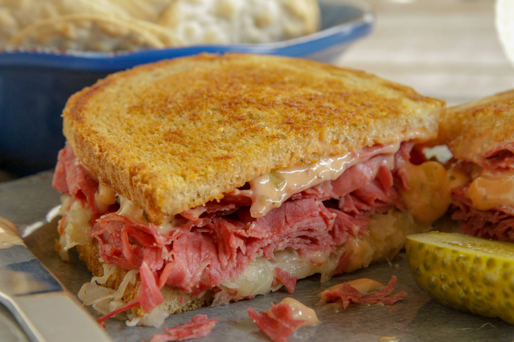

The Ruben Sandwich

This is the best sandiwch ever
Ingredients
- Rye Bread (2 slices)
- Corned Beef
- Saurkraut
- Swiss Cheese
- Thousand Island Dressing
- Butter
Steps
- Warm up Corned Beef and Saurkraut Separately
- Butter one side of each slice of Rye Bread
- Once the Corned Beef and Saurkraut are warm, assemble the sandwich: Bread / Corned Beef / Dressing / Cheese / Saurkraut / Bread
- Cook in a heated skillet until both buttered sides of the bread are golden and the cheese is melted